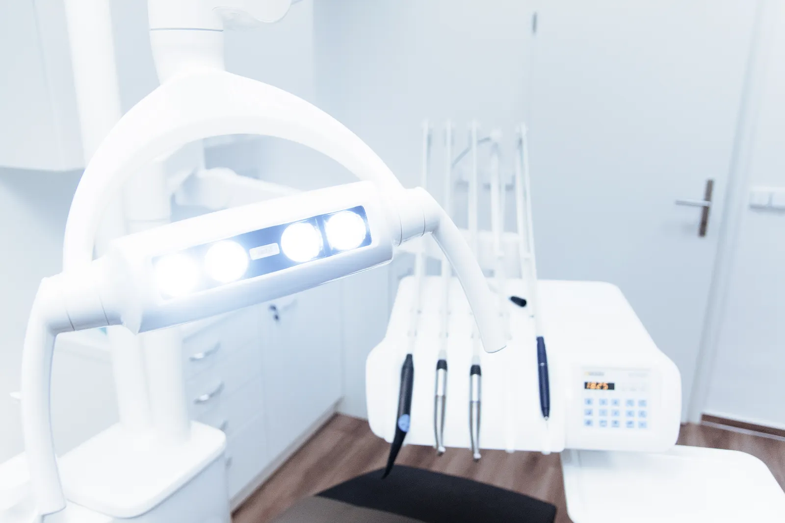

SERVICIILE VELORA
Îngrijire atentă.
Soluții pentru zâmbetul tău.
De la prevenție la îngrijire complexă, fiecare parcurs începe cu o evaluare și o conversație deschisă.


GRIJĂ ÎN FIECARE DETALIU
Consultație și prevenție
Începem prin a asculta. Continuăm cu o evaluare atentă și recomandări pe înțelesul tău.
- Evaluarea sănătății orale
- Igienizare profesională
- Recomandări pentru îngrijirea de acasă

GRIJĂ ÎN FIECARE DETALIU
Estetică dentară
Detalii care pun în valoare naturalețea zâmbetului, alese împreună și adaptate particularităților tale.
- Discuție despre așteptări
- Evaluarea opțiunilor de albire
- Soluții restaurative individualizate

GRIJĂ ÎN FIECARE DETALIU
Implantologie
Opțiunile pentru înlocuirea dinților lipsă se discută după o evaluare clinică atentă.
- Evaluare și planificare
- Discutarea alternativelor
- Monitorizare și îngrijire ulterioară

GRIJĂ ÎN FIECARE DETALIU
Ortodonție
Un plan de îngrijire construit în jurul alinierii dentare, al funcționalității și al vieții tale de zi cu zi.
- Evaluare ortodontică
- Prezentarea opțiunilor de tratament
- Controale pe parcursul îngrijirii

GRIJĂ ÎN FIECARE DETALIU
Endodonție
Atenție pentru structurile din interiorul dintelui și o explicație clară a fiecărei etape propuse.
- Evaluare clinică
- Tratamentul canalelor radiculare
- Recomandări și monitorizare

GRIJĂ ÎN FIECARE DETALIU
Stomatologie pentru copii
Răbdare, cuvinte prietenoase și timp pentru acomodare. O relație bună cu îngrijirea dentară începe prin încredere.
- Vizite de acomodare
- Prevenție și igienizare
- Îndrumare pentru copii și părinți
TRANSPARENȚĂ, DE LA ÎNCEPUT
Tarife orientative.
Costul final se stabilește în urma consultației, în funcție de particularitățile tratamentului.
- Consultație inițială
- de la 200 lei
- Igienizare profesională
- de la 350 lei
- Obturație dentară
- de la 300 lei
- Albire dentară
- de la 1.000 lei
- Tratament endodontic
- de la 600 lei
- Consultație ortodontică
- de la 250 lei
UN PAS CĂTRE MAI MULTĂ GRIJĂ